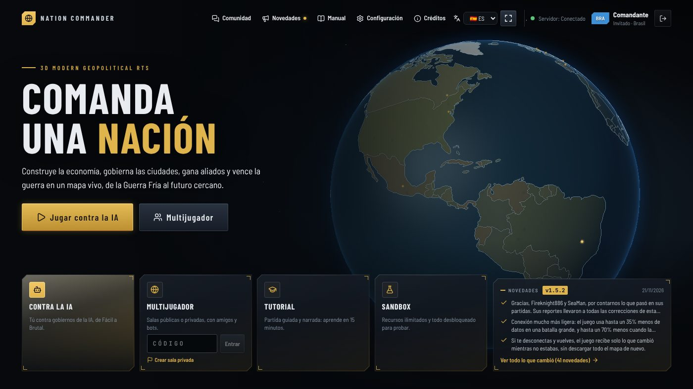
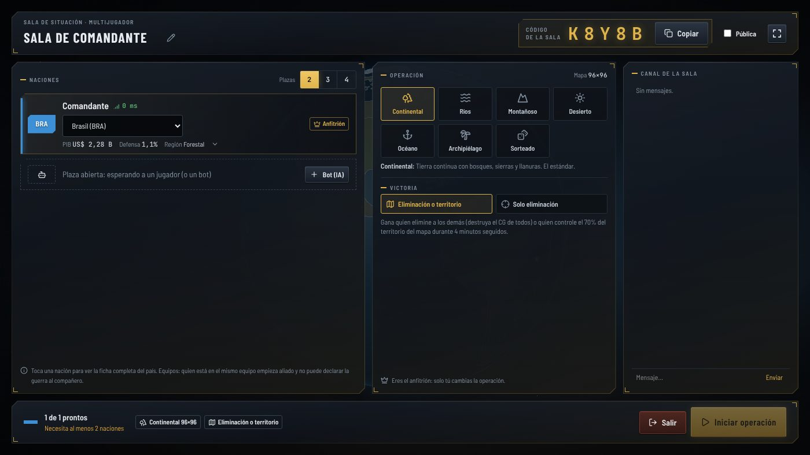
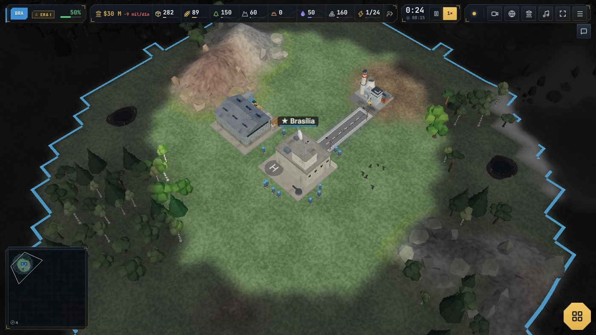
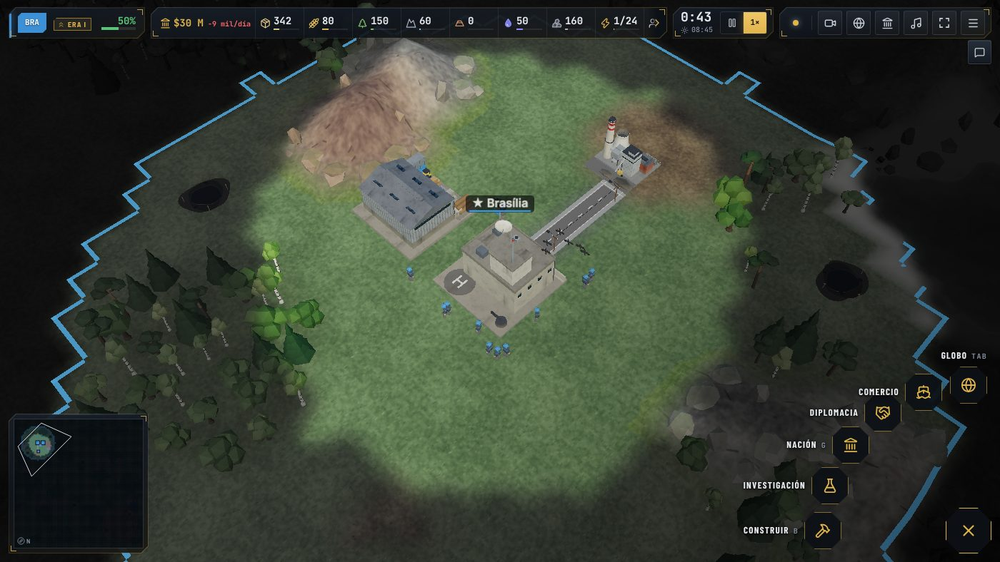
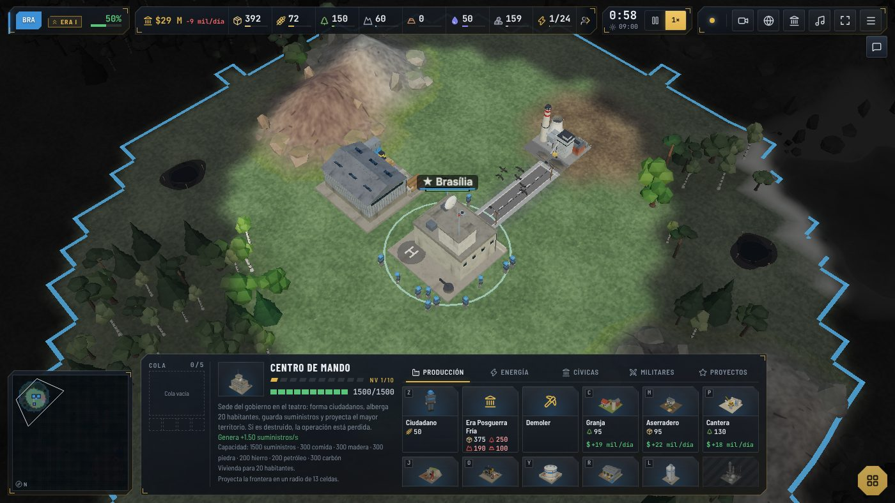
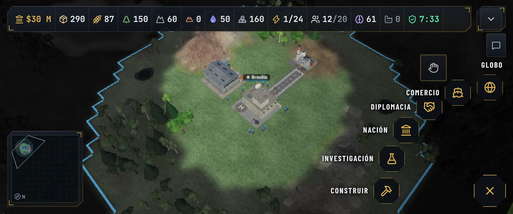
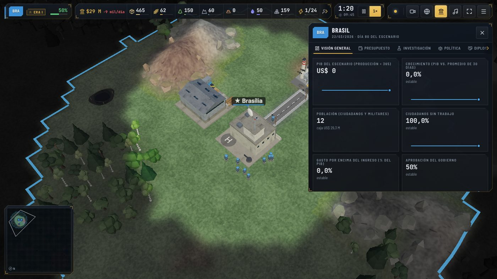
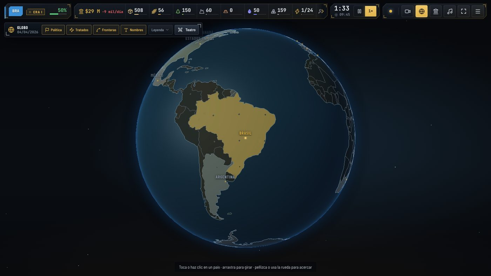
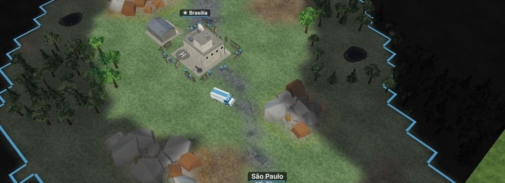

Léela en orden si es tu primera partida. Después, úsala como consulta.
1El juego en 1 minuto
2Empezar una partida
3La pantalla del juego
4Controles
5Recursos
6Población
7Construir la base
8Tus primeros 10 minutos
9Las tropas
10Guerra y combate
11Eras: la evolución de la nación
12Mejoras e investigación
13Gobernar el país
14El Globo y la diplomacia
15Fuerza aérea y misiles
16Ciudades, carreteras y servicios
17Energía eléctrica
18Grandes Proyectos y Programa Espacial
19La bonificación de cada país
20Consejos de estrategia
21Tropas por mar y por aire
22Conexión, caídas y rendimiento
23Glosario
Sobre los números de esta guíaLos costos y valores que aparecen aquí son los del juego cuando se escribió esta guía. El juego se actualiza a menudo: si algún número es distinto, siempre vale lo que aparece en la pantalla de la partida.
Símbolos usados
💡 ConsejoUn atajo o idea que ayuda a jugar mejor.
⚠ AtenciónUn error común que puede costar la partida.
ℹ Saber másUn detalle para quien quiere entender a fondo.
1El juego en 1 minuto
Eres el líder de un país. Al mismo tiempo, gobiernas la nación y comandas las tropas en el campo de batalla.
🗺
El teatro de operaciones
El mapa 3D donde todo pasa en la práctica: recolectas recursos, construyes la base, formas la población y entrenas el ejército. Es la parte de "estrategia en tiempo real".
🏛
El gobierno
El panel de tu nación: impuestos, áreas del presupuesto, investigación, aprobación del pueblo y diplomacia con otros países. Pasa un día de juego cada segundo.
Las dos partes están conectadas. Lo que produce la base llena la caja del país; la caja paga el ejército, las obras y las áreas del presupuesto; la Defensa envía suministros a la base; las bajas en la guerra bajan la aprobación; y un pueblo descontento puede derribar tu gobierno.
Cómo ganar
Victoria
Cómo lograrla
🏆 Militar
Destruir el Centro de Mando (el CG) de todos los enemigos. Es la forma más común.
🗺 Territorial
Controlar el 70% de todo el territorio del mapa durante 4 minutos seguidos. El anfitrión elige en la sala si esta victoria vale ("Eliminación o territorio") o no ("Solo eliminación").
⚖ Política
Hacer caer al gobierno enemigo: si su estabilidad queda por debajo de 10 durante 60 días seguidos, es derrotado.
⚠ Cómo perderSi tu Centro de Mando es destruido, pierdes en el acto. Protégelo siempre.
En el modo equipos, todo el equipo gana cuando solo queda él, incluso quien cayó antes (capítulo 14).
Qué hace diferente a este juego
Países reales, todos en igualdad. Todas las naciones de la partida empiezan con la misma economía. El país define la región inicial (forestal, petrolera, agrícola…) y da una bonificación única (capítulo 19).
Primero el encuentro, después la guerra. Solo puedes declarar la guerra (o firmar pactos) con quien ya encontraste en el mapa, y sin declaración de guerra nadie puede atacar a nadie.
Los recursos escasean. Al principio faltan recursos y tienes que elegir dónde gastarlos.
La nación evoluciona por eras, de la Guerra Fría al Futuro Cercano, y cambia de aspecto en cada era.
2Empezar una partida
Del menú principal al primer segundo de la partida.

El menú principal: la acción principal (Jugar contra la IA), el Multijugador y los modos en tarjetas, con las novedades de la versión.
Modos de juego
Jugar contra la IA — tú contra gobiernos controlados por la computadora, de Fácil a Brutal. Ideal para aprender.
Multijugador — salas públicas (la lista muestra nombre, mapa, países y plazas) o una sala privada: genera un código, y tus amigos entran escribiéndolo en el campo Código de la tarjeta Multijugador.
Tutorial — una partida guiada y narrada que enseña el juego en unos 15 minutos.
Sandbox — recursos infinitos y todo desbloqueado, para probar tropas y construcciones sin presión.
Continuar partida — aparece cuando hay una partida en curso. La partida se guarda sola.
💡 ¿Primera vez?Empieza por el Tutorial. El botón Manual, arriba en el menú, resume el juego en tarjetas cortas, y Novedades cuenta lo que cambió en cada versión.
Salas públicas: las salas abiertas por otros comandantes, con nombre, mapa, países y plazas. Haz clic en Entrar.
La sala de la partida

La sala multijugador: el código destacado (Copiar), las naciones y las plazas, el tipo de mapa, la regla de victoria y el canal de la sala. Abajo, quién ya está listo y el botón Iniciar operación.
Opción
Qué significa
Tu país
Cada país tiene su región inicial (forestal, petrolera…) y una bonificación única (capítulo 19).
Nombre de la sala
Solo en las salas multijugador: el anfitrión elige el nombre que aparece en la lista de salas públicas (hasta 32 letras).
Sala pública
Marcada, la sala aparece en la lista pública para que entre cualquier comandante. Desmarcada, solo entra quien tenga el código.
Plazas en la sala
De 2 a 4 en la versión gratuita (hasta 6 para suscriptores). Cada plaza queda abierta para un jugador o el anfitrión la llena con un bot (IA); la ✖ libera la plaza.
Equipos
Cada nación puede entrar en un equipo (1 a 3). Quien está en el mismo equipo empieza aliado, ya en contacto, y gana junto. Sin equipos, todos contra todos (con pactos posibles durante la partida).
Tipo de mapa
Continental (el estándar), Ríos y Puentes (pasos estrechos), Montañoso (mucho hierro, defensa fuerte), Desierto (poca comida, mucho petróleo), Océano Central (mar en el medio y las naciones en la tierra alrededor), Archipiélago (cada nación en su isla, sin puentes: el contacto es por buque de transporte y avión) o Sorteado.
Victoria
Eliminación o territorio (gana quien destruya todos los CG o controle el 70% del mapa durante 4 minutos) o Solo eliminación.
Dificultad
Ver la tabla de la página siguiente.
Niveles de dificultad
Al principio hay un período de preparación: la IA no declara la guerra y montas tu economía en paz. Cuanto más difícil, más corto es.
Fácil
Normal
Difícil
Brutal
Preparación
12 min
8 min
5 min
3 min
Primer ataque de la IA
cerca de los 14 min
cerca de los 10 min
cerca de los 8 min
cerca de los 6 min
Ataques siguientes
pequeños y espaciados (cada 6 min)
medianos (cada 4 min)
grandes (cada 3 min)
enormes (cada 2,5 min)
Incidentes fronterizos
no
sí
sí
sí
Aviones / misiles de la IA
no / no
sí / no
sí / sí
sí / sí
Ventaja de la IA
—
—
—
+15% de recolección
⚠ El primer ataque llega prontoJusto después de la preparación, la IA ataca con lo que tenga, aunque sean solo 3 o 4 soldados. Es una prueba de tu defensa: unos pocos soldados y una torre cerca de la base la aguantan sin problema. Después, cada oleada es mayor.
ℹ La IA juega limpioEn todos los niveles la IA sigue las mismas reglas que tú y tampoco ve a través de la niebla de guerra. Lo único extra es la bonificación de recolección del Brutal, que aparece en la sala.
⚠ Incidentes fronterizosDesde Normal, durante la preparación, la IA envía 2 o 3 soldados a hostigar granjas y aserraderos en el borde de tu territorio. No es una guerra declarada, pero hay intercambio de disparos durante 75 segundos. Ten algunos soldados cerca.
Lo que recibes al empezar
🏢
Centro de Mando
Tu capital. Forma ciudadanos, guarda suministros y define el territorio.
👷
11 ciudadanos
La mano de obra que levanta las obras y trabaja en granjas, aserraderos y canteras.
🔭
1 Explorador
Un batidor rápido que ve lejos. Úsalo para encontrar recursos y al enemigo.
⚡
Termoeléctrica de carbón
Unida al Centro de Mando por una carretera corta con postes. Da luz a los primeros cuarteles y fábricas (capítulo 17).
Además: 200 suministros, 100 de comida, 150 de madera, 60 de piedra, 50 de petróleo y 160 de carbón. Parece mucho, pero se acaba rápido: gasta con cuidado.
El comienzo de la partida: el Centro de Mando (con el nombre de tu capital), la termoeléctrica unida a él por una carretera con postes, la línea azul de tu territorio, rocas, bosque, suelo fértil (marrón) y los yacimientos de petróleo (manchas oscuras).
3La pantalla del juego
Sin nada seleccionado, la pantalla es casi toda mapa: la barra de arriba, el minimapa en una esquina y la rueda de herramientas en la otra.

La pantalla de la partida sin nada seleccionado: barra de recursos arriba, minimapa abajo a la izquierda y el botón de la rueda de herramientas (dorado) abajo a la derecha.
La barra de recursos
123456789
1US$ — la caja del país y cuánto gana o pierde por día (verde o rojo). Tócala para ver el extracto.
2🏭 — cuántas cosas se están produciendo ahora.
3Suministros
4Comida
5Madera
6Piedra
7Hierro
8Petróleo
9Población (pasa el ratón para ver detalles).
Después del petróleo aparecen el carbón y el ⚡ medidor de energía: "28/48" quiere decir 28 de consumo atendido de 48 de generación. Se pone rojo cuando alguna construcción está parada sin luz. En pantallas anchas aparecen también la hora y el tiempo (☀ 10:15, 🌧, ❄, 🌙).
ℹ Cómo leer cada recurso231 /1500 +2,9 quiere decir: tienes 231, caben como máximo 1.500 y estás ganando 2,9 por segundo. Un número rojo = estás perdiendo ese recurso (la comida, por ejemplo, la consume la población).
Los botones de la derecha
1234567
1Pausa (tecla Espacio).
2Velocidad 1×, 2× o 4× (solo contra la IA).
3De cerca — cámara cinematográfica cerca de las tropas.
4Globo — diplomacia y guerra (Tab).
5Nación — el panel del gobierno (G).
6Pantalla completa
7Menú — guardar, salir, configuración.
Justo debajo está el botón del chat. En el móvil, la barra muestra solo los recursos: la nación, el reloj y estos botones aparecen en el botón con la flechita, a la derecha.
La rueda de herramientas

La rueda abierta: seis herramientas en un arco, con el atajo de teclado al lado.
El botón dorado de la esquina inferior derecha abre la rueda:
Construir (B) — abre el menú de construcción del Centro de Mando desde cualquier lugar del mapa.
Investigación — las tecnologías del país.
Nación (G) — el panel del gobierno.
Diplomacia y Comercio — esas pestañas del panel del gobierno.
Globo (Tab) — el mapa del mundo, con la ficha de cada país.
Toca fuera o pulsa Esc para cerrarla. Cuando seleccionas algo, la rueda se hace más pequeña y se cierra, para dejar sitio al panel de la selección.
El panel de la selección
El panel de abajo solo aparece cuando hay algo seleccionado (o una acción en curso, como elegir dónde construir). Sin selección, desaparece y el mapa queda libre.

Con el Centro de Mando seleccionado: a la izquierda, la cola de producción; en el medio, la vida, el nivel y lo que hace el edificio; a la derecha, los botones de construcción en pestañas (Producción, Energía, Cívicas, Militares y Proyectos).
Clima, día y noche
La partida tiene un día completo cada 16 minutos: mañana, atardecer dorado, unos 4 minutos de noche (cielo estrellado y ventanas encendidas) y amanecer. El clima depende de los países de la sala: nieve si todas las naciones son de Europa (se acumula en el suelo y en los tejados), lluvias fuertes con rayos si algún país es tropical, y lluvia rara en el mapa Desierto. El clima es solo visual, con una excepción: la planta solar no genera de noche.
En la esquina inferior izquierda está el minimapa: haz clic en él para llevar la cámara a ese punto (con el botón derecho, las tropas seleccionadas van allí). Las zonas oscuras todavía no se exploraron, y un ataque a tus fuerzas parpadea en rojo.
4Controles
El juego funciona en computadora, móvil y tableta.
🖱 Computadora
Acción
Cómo hacerlo
Seleccionar
Clic izquierdo. Arrastra para seleccionar varios. Shift añade. Doble clic selecciona todos los del mismo tipo.
Mover / atacar
Clic derecho en el suelo (mover) o en el enemigo (atacar).
Avanzar atacando
F y clic en el destino: las tropas disparan a todo lo que encuentren en el camino.
Detener
X
Punto de reunión
Selecciona el cuartel o la fábrica y haz clic derecho en el suelo: las tropas nuevas van allí.
Grupos
Ctrl+1…9 guarda el grupo; 1…9 lo selecciona.
Cámara
WASD o flechas mueven · Q/E giran · la rueda del ratón acerca · H vuelve al CG.
Paneles
B Construir · G Nación · Tab Globo · F10 menú · Enter chat · Espacio pausa · M silencia la música.
Cancelar producción
Supr cancela el último elemento de la cola.
Cada botón de construcción y de tropa muestra su tecla de atajo en la esquina (por ejemplo C Granja, M Aserradero, Z Ciudadano).
📱 Móvil y tableta
Acción
Gesto
Seleccionar
Toque corto. Dos toques seleccionan todos los del mismo tipo. La herramienta Área + arrastrar selecciona varios.
Dar una orden
Toque largo (medio segundo) en el destino o en el enemigo, o la herramienta Orden + toque.
Construir
Rueda de herramientas → Construir (o toca el CG) → botón de la construcción → toca el mapa → toca de nuevo el mismo lugar o Confirmar.
Cámara
Arrastra con un dedo · pellizca para el zoom · gira con dos dedos.
Cancelar
Botón Cancelar; Desmarcar limpia la selección.
Los controles táctiles están recogidos en un botón a la derecha (la manita). Tócalo para abrirlos: Orden, Área (selección por rectángulo), Sumar (añade a la selección), Acercar, Alejar, Girar, CG y Desmarcar.

En el móvil en horizontal: la barra de recursos arriba, el chat y los controles táctiles recogidos a la derecha, y la rueda de herramientas abierta.
💡 En el móvil, usa el botón de pantalla completa para ganar espacio. El juego ignora los toques muy cortos y los movimientos pequeños para evitar órdenes por error.
5Recursos
Siete recursos mueven tu base. Cada uno viene de un lugar distinto del mapa.
Recurso
De dónde viene
Dónde se guarda
Para qué sirve
📦 Suministros
Renta fija del Centro de Mando y de los ayuntamientos, más la logística que paga la Defensa del presupuesto
Centro de Mando
Vehículos, reclutas, varias construcciones
🌾 Comida
Granja en suelo fértil (el suelo marrón). Nunca se acaba.
Silo
Ciudadanos, infantería y alimentar a la población
🪵 Madera
Aserradero junto al bosque
Almacén
Casi todas las construcciones
🪨 Piedra
Cantera junto a las rocas
Almacén
Construcciones, torres, artillería
⛓ Hierro
Mina en las vetas de mineral de las montañas
Almacén
Vehículos, aviones, investigaciones
🛢 Petróleo
Pozo de Petróleo sobre un yacimiento (mancha oscura). Necesita un Tanque de Petróleo cerca.
Tanque de Petróleo
Vehículos, aviones, declarar la guerra y el combustible de vehículos y buques en movimiento
⚫ Carbón
Sale de la Mina junto con el hierro (más o menos 1 de carbón por cada 7 de hierro)
Centro de Mando y Almacén
Combustible de la Termoeléctrica (capítulo 17)
Cómo funciona la recolección
La posición importa. Cada edificio de recolección "toma" las celdas de recurso a su alrededor (la granja, hasta 8 de suelo fértil; el aserradero, hasta 10 árboles). Al colocarlo, el juego muestra cuántas celdas vas a tomar y cuánto va a rendir. Dos edificios nunca comparten las mismas celdas.
Necesita gente. Un edificio de recolección solo rinde al máximo con 6 trabajadores (el pozo, con 4). Con 3, rinde la mitad.
Almacén lleno = producción parada. Construye silos, almacenes y tanques antes de que se llenen.
Montañas: cada nación tiene una montaña en el flanco de su base y otra mayor, disputada, entre ella y la vecina. Su base tiene roca y vetas de mineral con reservas muy grandes: construye la cantera y la mina pegadas a la ladera.
Los depósitos se agotan, pero despacio. Bosque, roca, mineral y petróleo son finitos y grandes (duran buena parte de la partida). Cada lugar acepta como máximo 2 extracciones: 2 aserraderos por bosque; en una montaña, 2 canteras, 2 minas o 1 de cada. Cuando se agota, construye en otro lugar. Solo el suelo fértil es infinito.
⚠ Cada edificio igual cuesta másCada construcción nueva del mismo tipo cuesta un 18% más que la anterior. La 5.ª granja cuesta casi el doble que la 1.ª. Por eso, piensa antes de construir.
Los bienes industriales
En la era 2 puedes construir la Refinería (petróleo → ⛽ combustible) y la Siderúrgica (hierro → 🔩 acero). Estos bienes sustituyen parte del costo de vehículos y aviones: 1 de acero vale 2 de hierro y 1 de combustible vale 2 de petróleo. O sea, la cadena duplica el rendimiento de tu hierro y tu petróleo. ⛽ Los vehículos y buques gastan combustible al moverse (los tanques más que los blindados ligeros; los buques todavía más): sale primero el combustible de la Refinería y después el petróleo. Sin ninguno de los dos, avanzan a media velocidad y el petróleo se pone rojo en la barra.
Una base en desarrollo en la Guerra Fría: el Centro de Mando (Brasília) en el medio, granjas, pozo de petróleo con tanque, casas, edificios residenciales, cuartel, fábrica, silos, almacén y las primeras tropas.
6Población
Las personas son el recurso más valioso del juego.
👷
Ciudadano
Se forma en el Centro de Mando (Z) por 50 de comida, en 10 segundos. Trabaja en las construcciones. Sin ciudadanos, nada produce. Los ciudadanos sin trabajo entran solos en los edificios con vacantes.
🪖
Recluta
Se alista en la Base Militar (60 de comida y 40 de suministros). Queda en la reserva y es la tripulación de toda tropa: cada soldado, tanque o avión usa 1 recluta.
Vivienda
Construcción
Viviendas
Observación
Centro de Mando
20
Ya viene construido
Casa
+10
Barata; amplía un poco la frontera
Edificio Residencial
+20
Era 2; tiene mantenimiento (sin pagarlo, no aloja a nadie)
Ayuntamiento
+10
También funda una ciudad (capítulo 16)
El tope absoluto es de 500 habitantes (ciudadanos + militares). Las casas y edificios particulares de la zonificación también traen ciudadanos.
Todo el mundo come
Cada habitante consume comida todo el tiempo. Si la comida se acaba, hay hambre y toda la producción cae a la mitad. Por eso la comida aparece en rojo en la barra: es el consumo.
💡 La gran decisiónCada recluta es una persona menos trabajando. Un ejército demasiado grande demasiado pronto = economía débil. Una economía grande sin ejército = blanco fácil. Equilibrar las dos cosas es el corazón del juego.
⚠ Error comúnOlvidarse de las casas. Cuando la población llega al límite de vivienda, no puedes formar a nadie más: ni ciudadanos, ni reclutas.
7Construir la base
Selecciona el Centro de Mando (o un Ayuntamiento) para abrir el menú de construcción.
El territorio
La línea de color en el mapa es tu frontera. Solo construyes dentro de ella. El territorio crece con el Centro de Mando (y sus mejoras), los ayuntamientos, torres, bases, fábricas y casas. Sin guerra declarada, las tropas extranjeras no pueden entrar en tu territorio.
El menú de construcción tiene 5 pestañas
Pestaña
Qué tiene
⚒ Producción
Ciudadano, avance de era, Granja, Aserradero, Cantera, Mina, Pozo, Tanque de Petróleo, Almacén, Silo, Refinería y Siderúrgica.
⚡ Energía
Termoeléctrica de Carbón, Parque Eólico (era 2) y Planta Solar (era 3).
Base Militar, Fábrica de Vehículos, Torre, Centro de Investigación Militar, Batería Antiaérea, Base Aérea y Silo de Misiles.
★ Proyectos
Los Grandes Proyectos Nacionales de la última era (capítulo 18).
🏗 Construir desde cualquier lugar:Construir en la rueda de herramientas (o la tecla B) abre el menú sin llevar la cámara al CG. En el menú, ⛏ Demoler derriba tus construcciones y carreteras, sin devolver el costo. Solo el Centro de Mando no se puede demoler.
Cómo colocar
Haz clic en el botón de la construcción. Un "fantasma" del edificio sigue al ratón.
Verde = se puede construir; rojo = no se puede (el juego dice el motivo). En los edificios de recolección, el panel muestra cuántas celdas de recurso va a tomar. En los que usan luz, la zona con energía aparece amarilla en el suelo y el panel avisa "⚡ Con energía aquí" o "⚠ Sin energía aquí".
Haz clic para confirmar. La obra empieza y se descuentan los recursos. Consejo: deja pasillos entre los edificios, para que pasen las tropas.
Constructores
Toda obra necesita ciudadanos constructores: hasta 4 por obra. Con 4, la obra avanza al ritmo normal; cada uno menos quita un 25% de la velocidad (solo, un constructor tarda 4 veces más); sin ninguno, la obra se detiene. Ves a los ciudadanos caminando hasta la obra y trabajando a su alrededor.
Salen primero de los ociosos y, si falta gente, de los empleos más nuevos (que paran mientras dura la obra y después vuelven). La obra más antigua recibe constructores primero.
En el panel de la obra, 👷 Constructores − / + elige cuántos (1 a 4). Menos constructores = obra más lenta, pero la economía sigue funcionando.
8Tus primeros 10 minutos
Un orden sencillo que funciona con cualquier país. Cuando le agarres la mano, crea el tuyo.
Manda al Explorador a recorrer. Selecciónalo y haz clic lejos, hacia el centro del mapa. Revela recursos y muestra dónde está el enemigo, y es el encuentro con las otras naciones lo que habilita la diplomacia y la guerra.
Forma ciudadanos sin parar en el Centro de Mando (Z), mientras haya comida y vivienda.
Granja (C) en el suelo fértil y Aserradero (M) en el bosque. Estos dos sostienen todo lo demás.
Cantera (P) en las rocas y una Casa antes de llenar la vivienda.
Base Militar: alista algunos reclutas y entrena 3 o 4 infanterías para defenderte de los incidentes fronterizos.
Mina (hierro) y Pozo de Petróleo con un Tanque de Petróleo al lado. Sin ellos, no hay vehículos.
Silo y Almacén cuando la barra de algún recurso esté casi llena.
Mejora el Centro de Mando (botón ⬆ en el panel). Desbloquea niveles más altos de los otros edificios y las eras.
Fábrica de Vehículos y, con el CG en nivel 3, avanza a la era 2.
Antes del fin de la preparación, ten un pequeño ejército cerca de la base y una Torre de Vigilancia mirando hacia el enemigo. En Normal, el primer ataque de la IA llega cerca de los 10 minutos.
💡 Mira la barra de arriba todo el tiempoEl recurso que más te falta es tu cuello de botella. Si es madera, haz otro aserradero; si es comida, otra granja. Un recurso parado en el límite del almacén es un desperdicio: gástalo o véndelo en el mercado interno (capítulo 13).
💡 ¿Botón apagado?Cuando un botón está gris, pasa el ratón (o toca) sobre él: el juego explica el motivo, por ejemplo "faltan 20 de petróleo", "sin recluta" o "requiere era 2".
ℹ ¿Y el gobierno?En los primeros minutos, deja el gobierno como está. Cuando la base esté funcionando, abre el panel Nación (G) y elige una investigación. El capítulo 13 explica el resto.
9Las tropas
Cada tropa tiene un papel. Ninguna gana sola: combínalas.
Tropa
Era
Dónde
Buena contra
Débil contra / observación
Explorador
1
Base Militar
Nadie: sirve para ver
Casi no lucha; rápido y con visión larga
Infantería
1
Base Militar
Infantería
Blindados: el fusil casi no hiere a los vehículos
Vehículo Blindado
1
Fábrica
Infantería; dar visión a la artillería
Tanques. Mantiene el suministro de las tropas en tierra enemiga
Tanque
2
Fábrica
Casi todo de cerca
Infantería Antitanque; lento en el bosque y el barro
Artillería
2
Fábrica
Todo desde lejos (alcance 16)
Frágil y ciega: necesita a alguien que le dé visión
Infantería Antitanque
2
Base Militar
Vehículos (daño triple)
Infantería
Ingeniero de Combate
2
Base Militar
— (apoyo)
Minas, carreteras, obstáculos; débil en combate
Fuerzas Especiales
3
Base Militar
Infantería y edificios
Rápidas y precisas; caras
Antiaérea Móvil
3
Fábrica
Aviones y misiles
Débil contra tropas terrestres
Phalanx CIWS Móvil
3
Fábrica
Cohetes en vuelo, aviones y misiles; infantería
Blindados: el Gatling de 20 mm casi no los hiere
Lanzacohetes
3
Fábrica
Bases y grupos (alcance 24, daño en área)
No dispara de cerca; recarga lenta; frágil
Tanque Moderno
4
Fábrica
Todo
Muy caro; el Antitanque todavía duele
Buque de Desembarco L402
1
Puerto
Lleva 10 soldados y 10 vehículos por mar
Sin armas; si se hunde, la carga se pierde
Fragata
1
Puerto
Buques y la costa; tiene antiaérea y lleva 15 soldados
Submarinos; no dispara a tropas en tierra
Submarino de Ataque
2
Puerto
Buques (solo otro submarino lo alcanza)
No ataca tierra
Submarino Lanzador
3
Puerto
Buques y 4 misiles de crucero
Carísimo; recarga en el Puerto
Portaaviones
3
Puerto
4 cazas embarcados
Sin arma propia; si se hunde, pierde los cazas
Pesquero
1
Puerto
— (civil): pesca solo y trae comida
Hasta 3 por Puerto; sin armas, en guerra lo pueden hundir
El triángulo básico
La flecha apunta de quien gana a quien pierde. La artillería y los cohetes se quedan atrás, protegidos, disparando desde lejos.
Veteranía
Cada baja enemiga cuenta para el rango de la tropa. Las tropas con experiencia valen oro: sácalas del combate cuando estén débiles.
Rango
Bajas
Bonificación
Recluta
0
—
Veterano
2
+10% de daño, +8% de vida
Élite
5
+20% de daño, +16% de vida
Héroe
10
+30% de daño, +24% de vida
Un ejército mixto del Futuro Cercano: Tanques Modernos, tanques, artillería, Antiaérea Móvil, Lanzacohetes e infantería.
Producir tropas
Ten reclutas en la reserva (alístalos en la Base Militar).
Selecciona la Base Militar (infantería) o la Fábrica de Vehículos (vehículos) y haz clic en la tropa. Entra en la cola (hasta 5 elementos).
Haz clic derecho en el suelo con el edificio seleccionado para definir el punto de reunión.
Investigación militar
Algunas tropas hay que desbloquearlas en el Centro de Investigación Militar (T), además de estar en la era correcta: Blindados sobre orugas (Tanque), Artillería de campaña, Armas antitanque, Ingeniería de combate, Defensa antiaérea móvil, Operaciones especiales, Lanzacohetes múltiples y Blindados de nueva generación (Tanque Moderno). El botón de una tropa bloqueada muestra lo que falta.
Modernización
Las investigaciones nacionales de defensa desbloquean paquetes de modernización (blindaje, puntería, motor…). Lleva la tropa a una Base Militar o Fábrica, selecciónala y haz clic en el paquete. Queda un tiempo fuera de combate mientras recibe el equipo.
Por mar: la Marina
Todos los buques salen del Puerto y ocupan varios reclutas como tripulación (L402 4, fragata 6, portaaviones 8, carguero 5, submarino 3; el pesquero no usa ninguno). Cada buque de guerra exige una investigación nacional (Logística naval, Guerra naval, Submarinos, Misiles de crucero submarinos, Aviación embarcada). Solo un submarino alcanza a otro submarino. El Carguero lleva las ventas por mar entre las naciones.
El Pesquero es civil y trabaja solo: sale del Puerto, pesca en el mar cerca de la costa y vuelve a descargar comida (necesita un silo con espacio). Hasta 3 por Puerto, y cada uno nuevo cuesta un 18% más.
Embarcar tropas en buques, desembarcar en la costa, lanzar paracaidistas desde el C-5 Galaxy y fundar colonias en islas: ver el capítulo 21.
💡 Ejército para empezar: 4 infanterías + 2 blindados; después, tanques, antitanques y 2 artillerías detrás de todo.
10Guerra y combate
Nada de ataques sorpresa: la guerra hay que declararla.
Declarar la guerra
Encuentra al enemigo. Las naciones del mapa empiezan sin contacto. El contacto llega cuando una tropa o construcción tuya avista el territorio o las fuerzas de la otra (aparece el aviso "Contacto establecido"). Manda al Explorador por delante.
Abre el Globo (Tab), haz clic en el país y elige Declarar guerra. Una ventana muestra el costo antes de confirmar.
Costo: 150 suministros, 50 de petróleo, el equivalente a 60 días de ingresos de la caja y 3 puntos de aprobación. Los tratados con ese país se rompen y sus aliados pueden sancionarte.
Con un pacto en vigor (no agresión o alianza), la declaración se rechaza hasta que alguien rompa el pacto. En un equipo, no se puede declarar la guerra al compañero.
Sin guerra, las órdenes de ataque se rechazan y las tropas no disparan solas. La IA sigue la misma regla: también tiene que declarar la guerra antes de atacar.
Alertas
Los grandes acontecimientos aparecen para todos los jugadores en una franja arriba, con un toque de clarín: declaración de guerra, nueva era, investigación de armas nucleares (inicio y fin) y Gran Proyecto (inicio y fin). Cuando atacan a tus fuerzas, suena una sirena y el lugar parpadea en rojo en el minimapa: haz clic allí para ir al ataque.
Niebla de guerra
Solo ves lo que ven tus tropas y edificios. Las zonas nunca exploradas están oscuras; las exploradas pero fuera de vista quedan apagadas, y los edificios enemigos allí aparecen como la última vez que los viste.
Desgaste: luchar lejos de casa cansa
Las tropas en territorio enemigo pierden vida poco a poco. Para evitarlo, mantén un Vehículo Blindado cerca: lleva los suministros y protege al grupo del desgaste.
Minas y obstáculos
El Ingeniero de Combate (era 2, investigación militar Ingeniería de combate) coloca minas antitanque:
Selecciona uno o más ingenieros y haz clic en Colocar mina.
Haz clic en el punto: el ingeniero más cercano va hasta allí y se queda 3 segundos quieto colocándola. Cada mina cuesta 15 de hierro y 10 de suministros; cada nación puede tener hasta 24.
La mina solo explota con vehículos enemigos (los soldados pasan por encima) y hiere también a quien esté alrededor.
Invisible: el enemigo no ve la mina, ni con el satélite. Solo la encuentran sus Ingenieros y Fuerzas Especiales (hasta 7 de distancia) y el avión de reconocimiento.
Retirada: un ingeniero quieto cerca de una mina enemiga ya detectada la desarma solo en 2,5 segundos.
El ingeniero también levanta obstáculos antitanque, que bloquean el paso de vehículos, y pavimenta carreteras fuera del territorio.
⚠ Las carreteras son el lugar favorito de las minas¿Avanzando por una carretera hacia la base enemiga? Manda un ingeniero o infantería por delante.
Tácticas que funcionan
Avanza atacando (F) en vez de solo moverte: las tropas se detienen a disparar a quien aparezca.
Visión primero. La artillería y los Lanzacohetes solo disparan a lo que alguien ve. Usa blindados, exploradores, torres o aviones de reconocimiento.
Ataca la economía. Las granjas, aserraderos y pozos enemigos suelen estar lejos del CG y mal defendidos.
Retira las tropas heridas; un Hospital cura a quien esté en su área.
Grupos con Ctrl+número: uno para el ejército, otro para la artillería.
11Eras: cómo evoluciona tu nación
Una partida pasa por cuatro eras. Cada una cambia el aspecto de tu base y desbloquea nuevas tropas y construcciones.
Era 1 · inicio
Guerra Fría
Hormigón gastado y pintura. Infantería, Vehículo Blindado, Explorador. Recolección, casas, Base Militar, Fábrica, Torre, Escuela y Puerto (con L402, Fragata y Carguero).
Era 2 · CG nivel 3
Posguerra Fría
Metal prefabricado y radares. Tanque, Artillería, Antitanque, Ingeniero, Submarino de Ataque. Centro de Investigación, Edificio Residencial, Comercio, Universidad, Antiaérea, Hospital, Refinería y Siderúrgica.
Era 3 · CG nivel 5
Era Digital
Vidrio y acero, paneles solares y antenas. Antiaérea Móvil, Phalanx CIWS Móvil, Fuerzas Especiales, Lanzacohetes. Base Aérea con cazas, reconocimiento, aviones de carga y el C-5 Galaxy. Submarino Lanzador y Portaaviones. Mejoras hasta el nivel 8.
Era 4 · CG nivel 7
Futuro Cercano
Compuesto oscuro, tiras de LED y drones. Tanque Moderno, bombarderos, Silo de Misiles y los Grandes Proyectos. Mejoras hasta el nivel 10.
Cómo avanzar
Selecciona el Centro de Mando y haz clic en Era …. Es una obra que cuesta recursos y US$ de la caja y exige un nivel mínimo de CG. Mientras dura, la parte de arriba de la pantalla muestra el progreso. Cancelar devuelve el 75%. Cuando avanzas, se avisa a todos los jugadores.
La misma base en la Guerra Fría (izquierda) y en el Futuro Cercano (derecha): toda la nación cambia de aspecto.
💡 ¿Avanzar pronto o tarde? Avanzar pronto da mejores tropas, pero gasta recursos que podrían ser un ejército. Bajo ataque, defiéndete primero y avanza cuando estés a salvo.
12Mejoras e investigación
Los edificios suben de nivel; el país investiga tecnologías.
Mejoras de los edificios
Selecciona un edificio terminado y haz clic en ⬆ Nivel. Un panel muestra el costo (recursos + US$), el tiempo, los requisitos y qué mejora.
Hasta 10 niveles (casa hasta 3, torre hasta 5). Ningún edificio pasa de 2 niveles por encima del Centro de Mando: así que mejora primero el CG.
Durante la obra, el edificio funciona al 50%. Cancelar devuelve el 80%.
En el nivel 6 eliges una especialización, que es permanente. Ejemplo: el CG puede convertirse en Centro administrativo (más territorio y renta), Centro logístico (más almacenamiento) o CG fortificado (mucha más vida y defensa).
Los niveles altos exigen investigación nacional, infraestructura nacional y, en CG 9+, estabilidad política.
Conocimiento y ciudades
Toda investigación cuesta US$ y puntos de conocimiento (🧠 en la barra de arriba). Los puntos vienen de las Escuelas (0,1 por segundo) y Universidades (0,3 por segundo, desde la era 2), con trabajadores y energía. Empiezas con 60.
Cada CG o ayuntamiento es una ciudad, y cada construcción pertenece a la más cercana. Cada ciudad admite 1 Escuela, 1 Universidad y 1 de cada producción de la era 3. Para tener más, funda más ciudades.
Investigación militar (Centro de Investigación): recursos + 🧠 15, 30 o 50 + US$ de la caja. Investigación nacional: US$ por día de la caja mientras dura + 🧠, pagado una vez al empezar.
Era 3, área Recursos:Silvicultura de eucalipto desbloquea el Bosque de Eucalipto (planta eucaliptos en la llanura a su alrededor, como una granja; madera lenta que nunca se acaba) y la Carbonera a su lado (2 de madera se vuelven 1 de carbón). Minería subterránea desbloquea la Mina Subterránea, que va en cualquier lugar de tu territorio y extrae un poco de piedra, hierro y carbón sin agotarse. Todos usan energía.
Investigación nacional
En el panel Nación → Investigación eliges una tecnología a la vez. Las investigaciones se dividen en cuatro áreas (Defensa, Estado y logística, Industria y construcción, Recursos naturales): toca un área y aparece su árbol, con las investigaciones unidas por líneas (✔ hecha, ▶ en curso, ○ disponible, 🔒 falta un requisito). Toca una investigación para ver lo que desbloquea, el costo, la duración y el botón Investigar. Cada investigación tiene un costo por día y una duración en días: mientras dura, el costo sale de la caja todos los días (quien gana 300 mil al día e investiga algo de 40 mil pasa a ganar 260 mil). Sin dinero en la caja para el día, la investigación se detiene y espera. Algunas tecnologías y lo que hacen:
Construcción modular, Automatización industrial, Energía eólica, solar, hidráulica y nuclear (las centrales), Siderurgia, Refinación de petróleo, Redes 5G
Defensa
Entrenamiento acelerado, Comunicaciones digitales, Aviación militar (Base Aérea), Defensa antiaérea (Antiaérea), Guerra naval (Fragata), Submarinos, Misiles de crucero submarinos, Aviación embarcada (Portaaviones), Operaciones aerotransportadas (C-5), Blindaje compuesto, Munición guiada, Sensores, Propulsión eficiente, Misiles balísticos, Armas nucleares
ℹ Dos tipos de investigaciónLa investigación nacional (panel Nación) mejora el país y desbloquea construcciones (Puerto, Hospital, centrales, Base Aérea…), modernizaciones y misiles. El botón de una construcción bloqueada dice "requiere investigación". La investigación militar (Centro de Investigación en el mapa) desbloquea nuevas tropas. La nacional se paga por día desde la caja; la militar, una vez al empezar.
13Gobernar el país
El panel Nación (G) es tu gabinete.

Visión General: el PIB del país (hecho de lo que produce el mapa), crecimiento, población, ciudadanos sin trabajo y aprobación, con gráficos.
Las pestañas
Visión General: la salud del país.
Presupuesto: impuestos y las áreas del gobierno.
Investigación: tecnologías nacionales.
Política: decretos, facciones y pedidos.
Diplomacia: relaciones y tratados.
Comercio: compra y venta de recursos.
Diagnóstico: por qué la aprobación sube o baja.
Datos: el historial de los números del país.
El presupuesto en palabras sencillas
El presupuesto cambia el país que está en el mapa. Arriba de la pestaña están los impuestos: residencial, comercial e industrial (0 a 30%). Más impuesto llena la caja, pero el pueblo te quiere menos y los barrios zonificados crecen más despacio.
Abajo están las siete áreas del gobierno. Cada una va del 50% al 150%: 100% es el costo normal, y al lado aparece el costo por día.
Área
Paga
Si la subes…
Defensa
la logística militar
Más suministros por segundo en tu base.
Infraestructura
el mantenimiento de edificios y carreteras
Obras más rápidas y la infraestructura que exigen los niveles altos del CG (por debajo de ~95%, el CG 8 se bloquea).
Educación
escuelas y universidades
Más conocimiento (🧠) para las investigaciones.
Salud
hospitales
Ciudadanos formados más rápido y los hospitales pesan más en la aprobación.
Seguridad
comisarías
Las comisarías pesan más en la aprobación y las protestas son más débiles.
Investigación
el día de la investigación en curso
Investigación nacional (y militar) más rápida.
Asistencia
administración y ayuntamientos
Aprobación directa.
No hay deuda pública. Si la caja no cierra el día, las áreas se recortan por igual (10% cada vez, hasta el 50%) y un aviso dice cuáles; sus efectos también bajan, y las cuentas sin pagar pesan en la aprobación.
Aprobación y estabilidad
La aprobación muestra cuánto le gusta el gobierno al pueblo. Viene de lo que pasa en el mapa: impuestos altos, ciudadanos sin trabajo, cuentas sin pagar y bajas de guerra la bajan; servicios que cubren los barrios, el área de Asistencia, el crecimiento y las victorias la suben. Por debajo de 35, empiezan las protestas. La estabilidad sigue a la aprobación despacio; si se queda por debajo de 10 durante 60 días, el gobierno cae y pierdes.
Decretos (pestaña Política)
Cada decreto tiene una ganancia y un precio, y dura al menos 30 días.
Decreto
Ganancia
Precio
Conscripción
Reclutas un 40% más baratos
−4 de aprobación
Economía de guerra
Producción militar un 20% más rápida
Más inflación
Racionamiento
La población come un 40% menos
−3 de aprobación
Ley marcial
Más estabilidad, menos protestas
−6 de aprobación
Facciones
Fuerzas Armadas, Industria, Agronegocio, Sindicatos y Opinión Pública tienen una satisfacción de 0 a 100 y hacen exigencias con plazo de 90 días, como "tener 2 fábricas terminadas" o "mantener 400 de comida en stock".
Cumplida: la facción queda más contenta, la aprobación sube y a veces llegan recursos de regalo.
Incumplida: la satisfacción baja. Por debajo de 30, la facción protesta: producción militar más lenta, menos recolección o menos aprobación.
Vigila la esquina superior izquierda de la pantalla: allí aparecen las exigencias (por ejemplo, "Exigencia de las Fuerzas Armadas: tener 1 base aérea terminada en el teatro en 90 días").
Pedidos de las potencias
Las mayores economías que conoces pueden pedir algo con plazo de 90 días: exportar, reforzar la defensa, terminar una investigación o no declarar la guerra a alguien. Cumplir da +12 de relación y ayuda financiera; incumplir o rechazar empeora la relación.
Comercio entre naciones
Con una Terminal Comercial (era 2) comercias con las otras naciones de la partida, en el panel Nación → Comercio. Todo pasa por la caja del país, y nada es instantáneo: el dinero solo llega al vendedor, y la mercancía solo llega al comprador, cuando la carga llega.
Solo aparecen anuncios de naciones que ya encontraste en el mapa.
Venta simple: anuncia "X de un recurso por US$ Y". La mercancía queda reservada hasta que alguien compre (o retires el anuncio).
Contrato de suministro: "X de cada recurso (hasta 3) cada N días, por US$ Z al mes". Sigue hasta que alguien lo termine, o cae solo si falta stock en la fecha o el comprador no puede pagar la entrega.
El comprador elige el transporte: 🚚 camión, con las dos Terminales Comerciales unidas por carretera o autopista; 🚢 buque, con Puerto en ambos lados unidos por agua y un Carguero del vendedor (cada carguero lleva un envío a la vez); ✈️ aéreo, con Base Aérea o CG nivel 4 en ambos lados, en línea recta y con poca carga por vuelo.
Peligro en el camino: tropas, torres y antiaéreas de quien está en guerra con el vendedor o el comprador destruyen el vehículo. Nadie paga, y la carga se pierde.
No hay comercio entre naciones en guerra. Si empieza la guerra, la carga en camino se confisca y el contrato cae.
Mercado mundial
Los países fuera de la partida compran y venden directamente, sin anuncio, pero pagan peor: compran al 80% del precio de referencia y venden al 160%, hasta 300 de cada recurso por día. La carga sale o entra por el borde del mapa y también se paga solo al llegar. Es para apuros; un vecino suele pagar mejor.
💡 ¿Sobra un recurso y falta otro?Anuncia lo que tienes de más y compra lo que te falta a un vecino. Une tu Terminal Comercial a la suya con una autopista: el camión es el transporte más barato de mantener y el más fácil de proteger.
Mercado interno: lo que sobra se vuelve suministros
A mitad de partida es común tener comida, madera, piedra y hierro de sobra y que falten suministros, que pagan el CG, las eras, los reclutas y las tropas. Selecciona tu Terminal Comercial (era 2): su panel tiene el mercado interno. Elige un recurso y vende un lote de 100 o de 500. Los suministros llegan al instante.
Recurso
Comida
Madera
Piedra
Hierro
Petróleo
Carbón
Precio lleno (suministros por unidad)
0,30
0,25
0,20
0,50
0,60
0,35
Vendiendo 500 de una vez
+121
+101
+81
+202
+243
+142
El precio baja cuando vendes mucho: con 1.000 unidades de un recurso vendidas hace poco, vale la mitad. El precio actual aparece en el panel (en amarillo cuando está bajo).
El precio se recupera solo en unos 8 minutos.
Dividir la venta en lotes pequeños no paga más que vender todo de una vez.
Los botones quedan grises cuando falta stock o cuando el almacén de suministros no tiene espacio para el pago.
💡 Vende un poco de varios recursosMil unidades de comida, madera, piedra y hierro vendidas juntas pagan casi todo el avance a la era 3. Vender un poco de cada uno rinde más que deshacerse de un solo recurso.
La caja del país
El US$ de la barra es la caja del país. Cada día de juego (1 segundo) entran ingresos y salen gastos; al lado del saldo ves cuánto estás ganando o perdiendo por día. Tócalo para ver el extracto:
Ingresos
Gastos
Producción de granjas, recolección e industria
Mantenimiento del ejército (cada tropa; vehículos y aviones cuestan más)
Productividad (infraestructura y educación)
Energía consumida
Impuestos de ciudadanos y lotes zonificados
Las siete áreas del presupuesto (mantenimiento, servicios, investigación…)
Ventas del comercio (carga entregada)
Compras del comercio (carga recibida)
Acuerdos comerciales con países de fuera
Misiones diplomáticas y alianzas con países de fuera
La guerra, las misiones de contacto, la ayuda a otros países y las operaciones fuera del mapa también salen de la caja. No hay deuda: lo que el país no tiene, no lo gasta.
La caja no tiene techo y nunca queda negativa: un ejército demasiado grande hace que el país pierda dinero, las áreas del presupuesto se recortan y las mejoras, carreteras y eras esperan a que vuelva el saldo.
14El Globo y la diplomacia
Los países que nadie eligió los lleva la IA, con economía propia. Pueden ser tus socios, o los de tu enemigo.

El Globo (Tab). Los botones de arriba muestran política, tratados, fronteras y nombres. Haz clic en un país para ver las acciones.
Contacto
Solo tratas con países que conoces. En el mapa de la partida, el contacto llega con el encuentro: cuando una tropa o construcción tuya avista el territorio o las fuerzas de otra nación, las dos se conocen (aviso "Contacto establecido"). Antes de eso, nada de guerra, pacto, alianza ni comercio con ella. Las naciones del mismo equipo empiezan ya en contacto. Fuera del mapa, conoces a los vecinos de tu región; para los demás, envía una misión de contacto (cuesta dinero y tarda unos días).
Acciones diplomáticas
Acción
Qué hace
Acuerdo comercial
Las dos economías crecen más durante 360 días. Hasta 4 por país; las grandes potencias quieren una buena relación antes de firmar.
Acuerdo de defensa
El aliado envía ayuda militar (suministros por segundo) a tu base. Exige una relación alta.
Sanciones
Dañan la economía y la aprobación del objetivo. Puedes pedir a otros países que sancionen a tu enemigo.
Misión diplomática
Mejora la relación poco a poco.
Ayuda
Mejora la relación rápido; sale de la caja.
Las relaciones van de −100 a +100 y el juego siempre muestra el motivo de cada número. Romper un acuerdo antes de tiempo daña tu reputación con todos.
Pactos y alianzas con las naciones del mapa
Sin equipos, las naciones de la partida (humanos y bots) pueden firmar pactos después del encuentro, en la ficha del país en el Globo:
No agresión
Alianza
Efecto
Ninguno puede atacar al otro.
Lo mismo, más visión compartida, envío de recursos y tropas en apoyo.
Firmar
Quien propone paga 20 días de ingresos de su propia caja.
30 días.
Romper
Quien rompe paga 90 días de ingresos al otro lado (sin dinero, no puede romper).
120 días.
Un bot responde al instante, pesando la relación, quién es más fuerte, enemigos comunes y la guerra en curso. ¿Rechazado? Espera 60 días para proponer de nuevo.
Para un humano, la propuesta se vuelve una invitación que acepta o rechaza en 60 días.
Firmar un pacto durante una guerra hace la paz. La no agresión puede convertirse en alianza.
Si, después de una eliminación, solo quedan naciones con pactos entre sí, los pactos caen y la guerra vuelve: al final, solo uno gana.
Entre aliados
Visión compartida: ves lo que ven las tropas y construcciones de tu aliado.
Tropas en apoyo: con tropas seleccionadas, el botón Auxiliar (con el nombre del país) las manda avanzando al ataque hasta el Centro de Mando del aliado.
Enviar recursos (ficha del país): elige hasta 6 recursos y el transporte. La carga sale de tu stock al instante y viaja como una carga de comercio (puede ser atacada por quien esté en guerra con cualquiera de los dos). Flete: camión 4% (Terminales Comerciales unidas por carretera o autopista), buque 8% (Puerto en ambos lados y un Carguero libre) o aéreo 20% (Base Aérea o CG nivel 4 en ambos lados y un avión de carga listo).
Modo equipos
Se define en la sala antes de empezar. Las naciones del mismo equipo son aliadas del primer al último día: no se puede romper la alianza ni declarar la guerra al compañero, y no se firma ningún otro pacto. La partida termina cuando solo queda un equipo, y todo el equipo gana.
Operaciones en otros países
¿En guerra con un país que no está en tu mapa? Desde el Mapa Operacional del Globo eliges una de sus regiones y envías tropas reales de tu base. Viajan, luchan una batalla local y vuelven con lo que quede. Las regiones ocupadas rinden suministros (y petróleo, si lo hay).
15Fuerza aérea y misiles
En la era 3 el cielo entra en la guerra.
Base Aérea
Tiene un hangar para 4 aviones. Cada avión necesita un recluta como piloto, gasta petróleo (o combustible) en cada misión y tiene mantenimiento.
Avión
Para qué sirve
Reconocimiento
Revela un área durante 40 segundos y marca los edificios enemigos que ve.
Caza polivalente
Ataca objetivos ya descubiertos e intercepta aviones enemigos cerca de tu base.
Bombardero (era 4)
Bombardeo de saturación: daño fuerte en el objetivo y los edificios cercanos. Lento e indefenso contra cazas.
Avión de carga
Amplía el comercio aéreo.
C-5 Galaxy (base nivel 2)
Paracaidistas: hasta 12 soldados y 3 vehículos; si lo derriban, mueren todos (capítulo 21).
Dron de ataque
Una munición que vuela hasta el punto elegido y se lanza sobre el objetivo (alcance 170). En los primeros 10 segundos puedes tomar el control del dron (botón o tecla T) y pilotarlo en primera persona. Se consume en el ataque.
ℹ Primero descubre, después atacaLos cazas y bombarderos solo atacan edificios que ya descubriste (con reconocimiento, tropas o el satélite). Atacar infraestructura exige la investigación nacional Munición guiada.
Defensa antiaérea
La Batería Antiaérea (fija), la Antiaérea Móvil (acompaña al ejército), el Phalanx CIWS Móvil, las torres y los cazas listos en la base tienen una probabilidad de derribar aviones e interceptar misiles. Más defensas = más probabilidad (hasta un límite).
La Cúpula de Hierro (era 4, investigación Misiles balísticos, pestaña Militares) protege un área de 22 a su alrededor: dispara 2 interceptores por misil, con 90% de acierto, y guarda 4 (recarga uno cada 40 segundos). Detiene el misil balístico común; el misil pesado y la ojiva nuclear pasan.
Misiles balísticos
Investiga Misiles balísticos y construye un Silo de Misiles (guarda hasta 2).
Produce el misil (caro y lento).
Elige el objetivo dentro del anillo de alcance (90 para el silo; 120 con el silo en nivel 2): cualquier punto fuera de tu frontera que ya hayas explorado (no necesita estar a la vista ahora); en el territorio de otra nación, solo en guerra. Prepara, autoriza manteniendo pulsado el botón y lanza.
Construye el silo cerca de la frontera para alcanzar al enemigo. El Submarino Lanzador lleva 4 misiles de crucero (alcance 70) y recarga junto a uno de tus Puertos.
☢ Ojiva nuclearCon la investigación Armas nucleares, el silo puede producir una ojiva nuclear: daño enorme en un área grande y la mitad de probabilidad de ser interceptada. Pero cada lanzamiento nuclear causa un choque en la economía del mundo entero, incluida la tuya: el PIB cae, la inflación y el desempleo suben y la renta de la base disminuye durante algunos meses. Úsala con mucho cuidado.
🌊 TsunamiUna ojiva nuclear que cae en el mar levanta un tsunami: la ola recorre el agua (rodeando islas y continentes) hasta 40 celdas, hunde o daña buques e inunda 3 celdas de tierra, destruyendo construcciones y tropas en la costa y arrasando los bosques. Alcanza a todos, incluidos quien lanzó y sus aliados. Solo escapa el submarino sumergido.
16Ciudades, carreteras y servicios
Ayuntamientos: funda nuevas ciudades
El Ayuntamiento (pestaña Cívicas) funda una ciudad con el nombre de una ciudad real de tu país: São Paulo, Río de Janeiro, Salvador… Amplía mucho la frontera, aloja a 10 personas, guarda recursos, rinde suministros y funciona como un segundo centro de construcción. Debe estar a 10 celdas o más de otra ciudad. A diferencia del CG, un ayuntamiento tuyo se puede demoler.
💡 ColoniasUn ayuntamiento también se puede construir en tierra neutral (nunca en la de otra nación), siempre que una tropa o buque tuyo esté a 8 celdas o menos del lugar. Al terminar, la frontera de la nueva ciudad se forma a su alrededor. Así se toma una isla deshabitada en el mapa Archipiélago.
⚠ Las ciudades se pueden capturarSi el enemigo destruye uno de tus ayuntamientos, pasa a ser suyo, junto con tus construcciones a menos de 8 celdas. Puedes recuperarlo de la misma forma. El Centro de Mando nunca se captura: solo se destruye.
Carreteras
Haz clic en Carretera (pestaña Cívicas del CG, o en el Ingeniero). Después marca las celdas: un clic marca o desmarca una celda, y hacer clic y arrastrar marca un camino en L. En el móvil, cada toque marca una celda. La vista previa muestra en verde dónde se puede pavimentar y en rojo dónde no. Para terminar, toca Construir (o Enter): hasta 40 celdas por obra, pagando piedra y un poco de dinero por celda. Cada celda se vuelve un tramo de asfalto con línea de carril, acera y bordillo, y los cruces reciben pasos de cebra.
Todas las unidades andan más rápido sobre la carretera, y los convoyes de comercio también.
Las casas y edificios residenciales conectados a una carretera dan hasta +4 de aprobación ("barrio pavimentado").
+15% de producción: granjas, aserraderos, canteras, minas, pozos, refinería y siderúrgica unidos por carretera al Centro de Mando o a un ayuntamiento producen un 15% más.
Fuera de tu territorio, solo con un Ingeniero cerca.
Cuidado: un enemigo en guerra también usa tus carreteras.
Autopistas
La Autopista (pestaña Cívicas del CG) es una vía doble con mediana y guardarraíl. Se marca igual que la carretera y sirve para unir países.
Sale de tu frontera sin ingeniero, pero solo por tierra neutral. Nunca entra en el territorio de otra nación, ni en paz ni en guerra (nadie puede llenar tu país de autopistas para estorbarte).
Se encuentra con la del vecino en tierra neutral. Cada nación construye su tramo hasta la tierra neutral, y allí se unen.
Más rápida: los camiones de carga y las caravanas van al doble de velocidad, y las tropas un 70% más rápido que fuera de la carretera.
No lleva energía (la energía solo anda por las carreteras comunes) y sus bordes no se pueden zonificar: los barrios crecen en las calles comunes. Cuesta 20 de piedra por celda y el doble de dinero que una carretera, pero el mantenimiento es la mitad. Sobre tu carretera, se convierte en autopista.
La IA une su Terminal Comercial a las de los vecinos en paz con autopistas, tramo a tramo. Puedes construir tu mitad y encontrarte con ella.
Cuidado: en guerra, el enemigo también avanza rápido por ella.
Carreteras como objetivo militar
En guerra, las carreteras y autopistas enemigas se pueden atacar. Las tropas nunca lo hacen solas: selecciona las tropas, haz clic en Atacar carretera y después en la celda de carretera o autopista enemiga a la vista. Van hasta allí y destruyen el asfalto (carretera: 80 de vida; autopista: 160). La celda destruida desaparece del mapa y corta lo que pasaba por ella:
la energía que corría por la carretera (lo que está al otro lado se queda a oscuras);
las caravanas de los ayuntamientos y la ruta del camión de carga hasta que se reconstruya.
💡 Corta la luz antes de atacarUna sola celda de la carretera que une la central a las fábricas y cuarteles del enemigo puede detenerlos un buen rato.
Caravanas
Cada ayuntamiento terminado tiene un camión de carga que va y viene solo entre él y el Centro de Mando. Cada llegada trae suministros: cuanto más larga la ruta, mayor la carga. En la práctica, un ayuntamiento unido al CG casi duplica lo que rinde.

La caravana (camión blanco) en la carretera entre Brasília y São Paulo.
⚠ La caravana solo anda por carreteraNecesita una carretera continua, sin huecos, que toque el Centro de Mando y el ayuntamiento. Los pasos del mapa sobre ríos y sierras también cuentan. Sin conexión, el camión se queda quieto y el ayuntamiento rinde solo su renta fija. Un territorio enemigo en guerra en el camino corta la conexión, y las tropas enemigas destruyen la caravana (sale otra del CG en 45 s).
Servicios
Funcionan en un radio de 10 celdas (el anillo verde aparece al colocar) y cada uno da hasta +2 de aprobación.
Servicio
Era
Efecto en el área
Escuela
1
La recolección rinde un 10% más; las tropas entrenadas cerca ya salen Veteranas.
Comisaría
1
Las protestas pesan menos en la estabilidad.
Hospital
2
Tus tropas en el área recuperan vida despacio.
💡 Escuela junto al cuartelUna escuela que cubra la Base Militar y la Fábrica hace que toda tropa nueva salga Veterana: +10% de daño y +8% de vida gratis.
Zonificación: casas y un edificio (residencial), tiendas (comercial) e industrias, todos de frente a la calle.
Zonificación
Con el CG seleccionado, pestaña Cívicas → Zonificación: pinta celdas cerca de tus carreteras (hasta 2 celdas de distancia) como residencial, comercial o industrial. Arrastra para pintar un rectángulo.
Nada aparece al instante. Las casas, edificios, tiendas e industrias particulares surgen poco a poco, según el atractivo de cada ciudad (barras R, C e I en el panel). Al principio, una ciudad sin atractivos no crece: construye casas y edificios del gobierno, servicios y empleos; a medida que el país crece, las zonas se llenan cada vez más rápido. Normalmente los primeros lotes aparecen entre los 8 y los 12 minutos, la ciudad florece hacia los 17 a 23 minutos y, al final de la partida, una nación bien desarrollada (policía, escuela, hospital, empleo, era avanzada) llena sus zonas rápido.
Todo edificio da a la calle. Con dos filas pintadas, la de atrás se vuelve el fondo del mismo lote: la casa, tienda o industria queda más larga.
Una casa particular trae 1 ciudadano (y 1 vivienda); un edificio particular, más raro, trae 5. El tope de la nación es de 500 habitantes. Las casas y edificios del gobierno solo abren vivienda: los ciudadanos vienen del Centro de Mando.
Las industrias llegan con buena economía, aprobación alta e impuesto industrial bajo. Las casas, cuando hay empleo cerca, servicios (policía, escuela, hospital), energía e impuesto bajo. Las tiendas, con residentes e industrias en la ciudad.
Cada sector tiene su impuesto (0 a 30%): más impuesto, más dinero en la caja, pero menos demanda.
Los lotes pagan impuesto y solo gastan energía (0,5 cada uno). Con impuesto alto, ley marcial, ataques repetidos, falta de energía o de empleo, pueden ser abandonados: se quedan oscuros hasta que uses el pincel Demoler.
17Energía eléctrica
Toda construcción gasta energía. Cuarteles, fábricas y defensas modernas se detienen por completo sin ella; los edificios de recolección rinden menos.
Las centrales
Central
Era
Potencia
Cómo funciona
Termoeléctrica de Carbón
1
24
Quema carbón según el uso (hasta 0,6 por segundo). Barata y fuerte, pero sin carbón se apaga.
Parque Eólico
2
hasta 12
Sin combustible; rinde del 35% al 130% según el viento, que cambia despacio.
Planta Solar
3
hasta 25
Sin combustible; solo de día (nada por la noche).
Hidroeléctrica (Gran Proyecto)
4
90
Fuente grande y limpia del final de la partida.
Central Nuclear (Gran Proyecto)
4
150
La mayor fuente del juego.
Termoeléctrica, parque eólico y planta solar cerca del CG. El cuartel de la izquierda se construyó lejos de la red: el ⚡ rojo muestra que está parado.Al colocar, la zona con energía se pone amarilla en el suelo y el panel dice "⚡ Con energía aquí".
La energía anda por las carreteras
La red está formada por tus carreteras, el Centro de Mando y las centrales. Las carreteras reciben postes y cables.
Una construcción a hasta 4 celdas de la red recibe energía. Al colocar, esa zona aparece amarilla en el suelo.
Tramos de carretera separados son redes separadas: una central solo abastece lo que está conectado a ella.
Si la generación no alcanza, las construcciones más nuevas se apagan primero; las más antiguas mantienen la energía.
Quién gasta energía
Se detienen sin energía
Gasto
No se detienen, pero el pueblo se queja
Gasto
Base Militar
3
Casa
1
Fábrica de Vehículos
6
Edificio Residencial
2
Centro de Investigación
5
Hospital
3
Base Aérea
8
Escuela, Comisaría, Ayuntamiento, Terminal
2 cada uno
Silo de Misiles / Cúpula de Hierro
5 / 6
Red 5G / Centro Financiero
10 / 6
Batería Antiaérea
2
Programa Espacial
16
Refinería / Siderúrgica
5 / 6
Almacén, Silo, Tanque, Torre
1 cada uno
Rinden 75% sin energía: Granja, Aserradero, Cantera / Mina, Pozo
1 / 2
Puerto
3
Solo el Centro de Mando no gasta energía. Un edificio de recolección lejos de la red no se detiene (la economía nunca se bloquea), pero rinde el 75%. El consumo de todos crece con la era: ×1,3 en la Posguerra Fría, ×1,6 en la Era Digital y ×2 en el Futuro Cercano, así que avanzar de era pide nuevas centrales. Las casas con energía dan hasta +3 de aprobación; los barrios a oscuras quitan hasta −6.
⚠ ApagónCuando algo se detiene sin energía, aparece un ⚡ rojo parpadeando sobre el edificio, el medidor de energía se pone rojo y llega un aviso de "Apagón" con el motivo: faltan centrales (o carbón) o el edificio está lejos de la red.
💡 Ataca la energía del enemigoDestruir una termoeléctrica, cortar la carretera que lleva la energía o arrasar las minas de carbón del rival apaga sus cuarteles y fábricas. La IA te hace lo mismo: protege tus centrales con antiaérea.
ℹ ¿Sobra o falta carbón?El carbón se puede comprar y vender en el mercado interno de la Terminal Comercial. Si falta carbón, prefiere la eólica y la solar.
18Grandes Proyectos y el Programa Espacial
En la era 4, obras gigantes dan bonificaciones a toda la nación. Una de cada por país.
Proyecto
Bonificación mientras esté en pie
Central Nuclear
+4 suministros/s, obras un 10% más rápidas, la economía crece más
Red 5G Nacional
Investigación militar un 30% más rápida, +2 de visión para todas las tropas
Hidroeléctrica
+15% en la recolección de todos los recursos, +2 suministros/s (a la orilla del agua)
Centro Financiero
Más ingresos en la caja (+25% sobre la bonificación de los proyectos), +3 suministros/s
Programa Espacial 🛰
Lanza un satélite: ves todo el mapa en tiempo real
🚀 El Programa Espacial
Es la construcción más cara del juego: unos 1.950 suministros, 1.560 de hierro, 1.040 de piedra, 780 de madera, 780 de petróleo, una buena parte de la caja del país y 6 minutos de obra. Exige el CG en nivel 9 y la investigación Tecnología espacial.
Con el edificio terminado, selecciona el centro espacial y mantén pulsado el botón de autorización.
Cuenta atrás de 10 segundos, con vapor saliendo de la plataforma.
Ignición: destello, humo, temblor, y el cohete sube hasta desaparecer en el cielo.
El satélite entra en órbita y aparece girando alrededor del Globo, con tu bandera, para que todos lo vean.
A partir de entonces, la niebla de guerra desaparece para ti: toda tropa y construcción enemiga queda visible y se vuelve objetivo de aviones y misiles. Solo las minas terrestres siguen ocultas.
⚠ Protege la inversiónLos Grandes Proyectos son objetivos enormes. Rodéalos de antiaérea y tropas: si uno es destruido, su bonificación se acaba.
19La bonificación de cada país
Cada país tiene su propia ventaja. Elige el que combine con tu forma de jugar.
País
Bonificación
Efecto
🇧🇷 Brasil
Guerra en la selva
Tropas un 25% más rápidas en el bosque; la mitad del desgaste en tierra enemiga
🇦🇷 Argentina
Granero del mundo
+25% de comida
🇺🇸 Estados Unidos
Logística aérea
Aviones un 30% más baratos
🇲🇽 México
Industria maquiladora
Vehículo Blindado un 20% más barato
🇩🇪 Alemania
Ingeniería blindada
Tanques con un 15% más de vida
🇫🇷 Francia
Fuerza de intervención
Fuerzas Especiales y Antitanque un 20% más baratos
🇮🇳 India
Gran reserva humana
Reclutas un 25% más baratos
🇯🇵 Japón
Eficiencia industrial
Obras un 15% más rápidas
🇿🇦 Sudáfrica
Minerales estratégicos
+30% de hierro
🇦🇺 Australia
Minería a gran escala
+20% de piedra y hierro
🇬🇧 Reino Unido
Fuerzas especiales de élite
Fuerzas Especiales con +20% de vida y un 15% más baratas
🇨🇳 China
Producción en masa
Tropas producidas un 20% más rápido
🇮🇹 Italia
Ingeniería civil
Obras un 12% más rápidas y +10% de piedra
🇨🇦 Canadá
Recursos forestales
+25% de madera
🇸🇦 Arabia Saudita
Petróleo abundante
+30% de petróleo
🇪🇸 España
Infantería de montaña
Infantería un 15% más barata y +10% de vida
🇪🇬 Egipto
Muro antiaéreo
Antiaérea propia un 20% más eficaz
🇷🇺 Rusia
Artillería en masa
Artillería y Lanzacohetes un 25% más baratos
🇹🇷 Turquía
Industria de defensa
Antiaérea Móvil y Vehículo Blindado un 15% más baratos
🇰🇷 Corea del Sur
Defensa aérea superior
Antiaérea propia un 30% más eficaz
🇰🇵 Corea del Norte
Ejército de masas
Artillería un 20% y reclutas un 15% más baratos
La bonificación aparece en la ficha del país en la sala. Cada país también tiene una región inicial (bosque, petróleo, tierra fértil…) que cambia los recursos cerca de tu base.
20Consejos de estrategia
Los 10 mandamientos del comandante
Nunca dejes de formar ciudadanos al principio. Gente parada es economía parada.
Encuentra tu cuello de botella. El recurso que más te falta decide qué construir después.
No dejes recursos parados en el límite. Un almacén lleno es producción tirada.
Mejora el Centro de Mando pronto: desbloquea eras y las mejoras de todo lo demás.
Explora. Saber dónde están el enemigo y los yacimientos vale más que un tanque.
Defiéndete antes del fin de la preparación. La primera oleada de la IA llega puntual.
Mezcla tropas. Un ejército de un solo tipo tiene un contraataque obvio.
Dale visión a la artillería. Sin ojos, no dispara.
Cuida al pueblo. Demasiadas bajas, impuestos altos y hambre bajan la aprobación, y el gobierno.
Usa la diplomacia. Un acuerdo de defensa envía suministros gratis; las sanciones debilitan al enemigo sin disparar un tiro.
Errores comunes de principiante
Pozo sin tanqueEl pozo de petróleo solo funciona con un Tanque de Petróleo a 9 celdas o menos.
Sin reclutas¿Hiciste clic en la tropa y no pasó nada? No hay recluta en la reserva. Alístalo en la Base Militar.
Atacar sin guerra¿Las tropas no disparan? Encuentra al enemigo y declara la guerra en el Globo primero.
Ejército lejos de casaLas tropas en tierra enemiga pierden vida. Lleva un Vehículo Blindado.
Cuartel a oscuras¿Lo construiste lejos de la carretera y la producción no avanza? Busca el ⚡ rojo: lleva una carretera hasta allí o construye en la zona amarilla.
Energía solo de carbónSin mina, el carbón se acaba y todo se apaga. Construye la mina pronto o mezcla eólica y solar.
Tres estrategias para probar
⚡
Ataque rápido
Economía mínima, muchos soldados y blindados, ataque justo después de la preparación. Bueno contra quien construye despacio.
🏗
Economía fuerte
Mucha recolección y mejoras, defensa con torres y antitanques, avance rápido de era. Gana a largo plazo.
🗺
Expansión
Ayuntamientos y carreteras para dominar el mapa. Puede llevar a la victoria territorial (70% del mapa).
21Tropas por mar y por aire
Ríos anchos, océanos e islas no detienen a un ejército: llévalo en buque o en avión.
Embarcar en un buque
Ten un buque que lleve tropas: el Buque de Desembarco L402 (hasta 10 soldados y 10 vehículos) o la Fragata (hasta 15 soldados). Los dos salen del Puerto.
Selecciona las tropas y haz clic derecho sobre el buque (en el móvil, mantén pulsado sobre el buque). Caminan hasta la orilla y embarcan.
Selecciona el buque y llévalo cerca de la costa de destino.
Con el buque seleccionado, haz clic derecho en tierra: las tropas desembarcan en la costa más cercana a ese punto.
El L402 no tiene armas: escóltalo con fragatas. Un buque hundido se lleva la carga con él.
Solo el dueño ve lo que hay a bordo: el enemigo no sabe cuántas tropas lleva el buque.
Los vehículos y buques gastan combustible al moverse (capítulo 5).
Paracaidistas: el C-5 Galaxy
El C-5 Galaxy sale de la Base Aérea en nivel 2 y exige la investigación nacional Operaciones aerotransportadas. Lleva hasta 12 soldados y 3 vehículos a la vez.
Lleva las tropas cerca de la Base Aérea (a 14 o menos) y déjalas seleccionadas.
Selecciona la Base Aérea, haz clic en Paracaidistas y después en el punto de lanzamiento, dentro del alcance (200).
El avión vuela hasta allí y las tropas saltan en un área de 5 celdas alrededor del punto. Después vuelve a la base.
⚠ En la caída, son blancoDurante el descenso (3 a 5 segundos; los vehículos tardan más) las tropas no disparan, pero pueden ser alcanzadas. Si el C-5 es derribado en el camino, mueren todos los que van a bordo. Lanzar en el territorio de otra nación solo se permite en guerra con ella. Limpia primero la antiaérea del objetivo.
Portaaviones
El Portaaviones (era 3, investigación Aviación embarcada) lleva 4 cazas y sus cuatro pilotos, además de la tripulación. Los cazas despegan desde él para atacar objetivos descubiertos cerca de la costa. Si se hunde, se pierden los cazas a bordo.
Islas: el mapa Archipiélago no tiene puentes. Para tomar una isla deshabitada, lleva una tropa o un buque hasta allí y construye un Ayuntamiento a 8 celdas o menos de él (capítulo 16).
💡 Desembarca en dos oleadasPrimero manda fragatas a limpiar la costa y las torres enemigas; después el L402 con tanques e infantería antitanque. Paracaidistas detrás de las líneas, al mismo tiempo, dividen la defensa.
22Conexión, caídas y rendimiento
El juego corre en el navegador. Si falla internet o el dispositivo, intenta salvar tu partida.
¿Se cayó la conexión?
Vuelve a la misma partida solo con abrir el juego otra vez, en la misma cuenta: se reconecta solo y te lleva directo a tu puesto. No necesitas el código de la sala.
Al volver, el juego recibe solo lo que cambió mientras estabas fuera, sin descargar todo el mapa de nuevo.
Contra la IA, la partida se pausa mientras estás fuera, y tienes 1 minuto para volver.
Entre jugadores, la partida se pausa hasta 90 segundos cuando alguien se cae (hasta 3 veces por jugador; los demás pueden reanudar antes), y quien se cayó tiene 3 minutos para volver. Después, su nación se declara abandonada, y la pantalla de derrota dice el motivo.
Si el servidor se reinicia (en una actualización, por ejemplo), las partidas se guardan y vuelven cuando los jugadores se reconectan.
⚠ Salir por el menú no es lo mismo que caerseSalir de la partida por el menú (o Rendirse) cuenta como abandono inmediato. ¿Necesitas ausentarte un momento? Contra la IA, pausa; entre jugadores, usa una de las 3 pausas de la partida (hasta 60 segundos cada una).
¿Se detuvieron los gráficos?
En dispositivos más débiles, el navegador a veces libera la tarjeta gráfica y el mapa se queda en blanco mientras la interfaz sigue funcionando. El juego lo nota:
Aparece el aviso "Los gráficos se detuvieron" con el botón Recargar en modo ligero: la página se recarga y vuelve a la misma partida.
El juego pasa solo al modo ligero (calidad Móvil/Baja, sin sombras). En Ajustes aparece la opción de volver a la calidad anterior.
Elegir la calidad a mano apaga el modo ligero automático.
Para un juego más ligero
En Ajustes, elige la calidad gráfica sugerida para tu dispositivo. Solo cambia el aspecto, nunca las reglas.
En el móvil, usa pantalla completa y cierra otras aplicaciones.
El juego envía menos datos de las tropas lejos de la cámara: mirar una zona tranquila del mapa deja la conexión aún más ligera.
ℹ Ayúdanos a mejorar¿Encontraste un problema? Usa Novedades → enviar tu opinión en el menú. Cada informe se lee, y muchos ya se convirtieron en correcciones.
23Glosario
Término
Significado
Apagón
Construcciones paradas por falta de energía (generación baja o lejos de la red).
Autopista
Vía doble que sale de la frontera por tierra neutral; duplica la velocidad de las cargas y acelera las tropas.
Caja del país (US$)
Dinero que paga el ejército, las áreas del presupuesto, mejoras, carreteras, eras y proyectos. Recibe producción, impuestos y comercio; nunca queda negativa.
Caravana
Camión que lleva suministros entre un ayuntamiento y el CG; solo anda por carretera.
Centro de Mando (CG)
Tu capital en el mapa. Si cae, pierdes.
Colonia
Ayuntamiento construido en tierra neutral con una tropa o buque tuyo cerca.
Contacto
Conocer a otra nación; en el mapa, llega con el encuentro. Sin él, no hay guerra, pacto ni comercio.
Costo creciente
Cada construcción nueva del mismo tipo cuesta un 18% más.
Cuello de botella
El recurso que más limita tu crecimiento en este momento.
Desgaste
Vida que pierden las tropas en territorio enemigo sin un blindado cerca.
Era
Etapa de la evolución de tu nación; desbloquea tropas y construcciones y cambia el aspecto.
Especialización
Elección permanente hecha en el nivel 6 de un edificio.
Estabilidad
Firmeza del gobierno. Por debajo de 10 durante 60 días, el gobierno cae.
Incidente fronterizo
Hostigamiento rápido de la IA durante la preparación, sin guerra declarada.
Logística del teatro
Suministros por segundo que el área de Defensa del presupuesto envía a la base.
Mercado interno
Venta de excedentes por suministros en la Terminal Comercial; el precio baja con las ventas y se recupera con el tiempo.
Mina antitanque
Trampa del Ingeniero que solo explota con vehículos enemigos; invisible incluso para el satélite.
Niebla de guerra
La parte del mapa que no ves en este momento.
Pacto
No agresión o alianza entre naciones del mapa; romperlo cuesta caro.
Preparación
Los primeros minutos, en los que la IA no declara la guerra.
Recluta
Persona de la reserva militar; tripula cada tropa o avión.
Red eléctrica
Carreteras, Centro de Mando y centrales; lleva la energía hasta 4 celdas alrededor.
Rueda de herramientas
El botón de la esquina inferior derecha: Construir, Investigación, Nación, Diplomacia, Comercio y Globo.
Sala pública
Sala multijugador que aparece en la lista de salas públicas del menú.
Teatro de operaciones
El mapa 3D de la partida.
Veteranía
Rango ganado con bajas: Veterano, Élite y Héroe.
Yacimiento
Grupo de celdas de un recurso (bosque, roca, mineral, petróleo). Se agota con el uso.
¡Buena suerte, Comandante!La mejor forma de aprender es jugando. Empieza por el Tutorial, juega en Fácil, prueba tropas en el Sandbox y vuelve a esta guía siempre que tengas una duda.